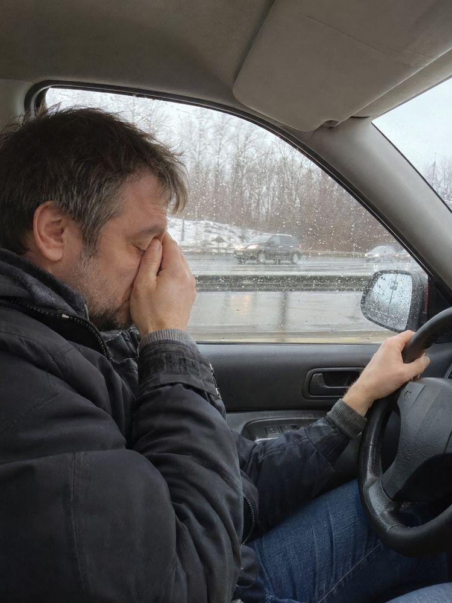
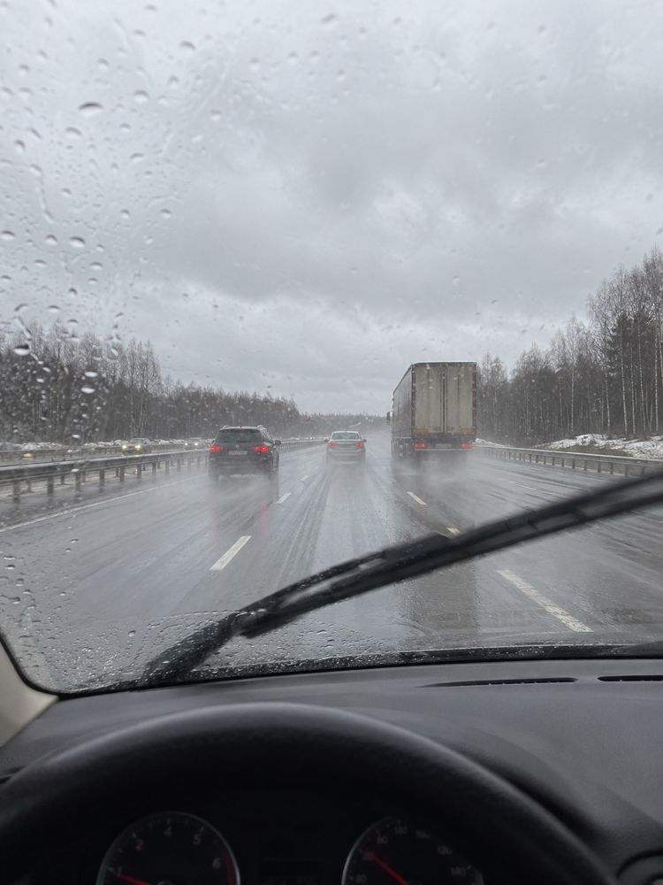
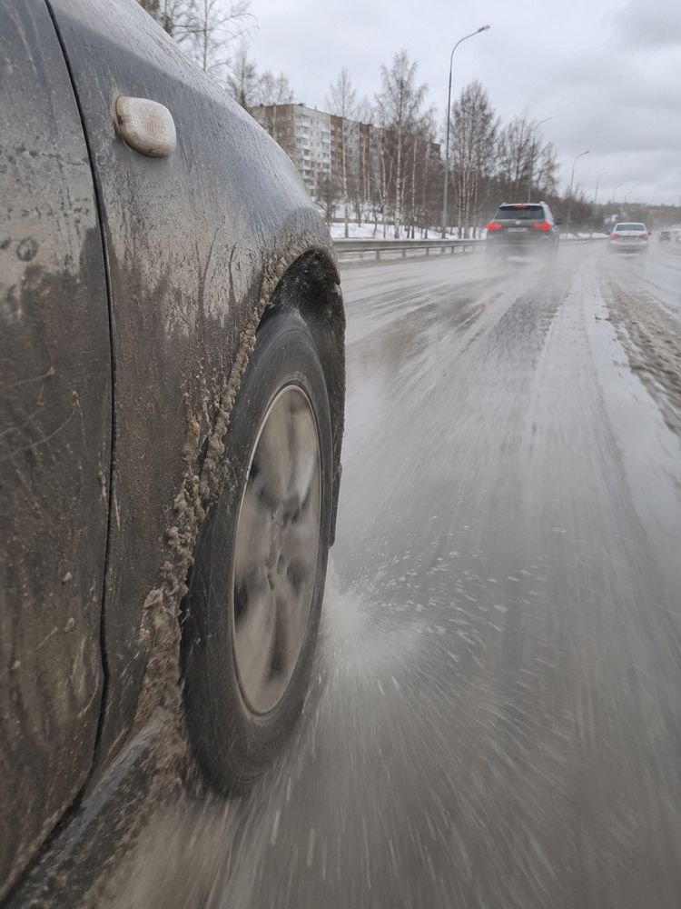

Шум на трассе: 5 материалов по новым правилам
Послушать итог голосом. Ничего не опубликовано.
Один момент заранее: слова «устают не от дороги, а от шума» сильнее источников. Настоящие шведские исследования есть, но шум с дорогой как причину они не сравнивают, а общий эффект на сонливость в лучшей работе не значим. Поэтому первый экран: «Устал на трассе? Дело не только в дороге».
Что поменялось по твоим правилам
| Правило | Как сделано |
|---|---|
| Сильнее показывать, что продаём | Карточка «Мы делаем шумоизоляцию» с реальным багажником Honda Envix. В ВК ещё цены и «до и после». |
| Не 10, а по делу | По 6 карточек: первая проблема, одна товар, последняя призыв. В ВК карточка 5 – наша работа как доказательство, то есть вторая про услугу. Решил оставить, скажи, если лишняя. |
| Чек-лист в текст | «Где шумит и что проверить» – в подписи и посте, на карточках его нет. |
| Лого только про нас | Только на карточках с нашей работой. |
| Синий вместо жёлтого | Везде синий. Жёлтого нет. |
| Подача по площадкам | Дзен – тревожная история с завуалированной шумкой; Инстаграм – совет от компании; ВК – тест «вопрос и наша работа»; сайт – тёплый информационный запрос; Телетайп – горячий запрос с ценами и переносом на сайт. |
Карусели про ДТП я тоже сократил до 6 и перевёл на синий: посмотреть.
Материалы
1. Инстаграм, 6 карточек: совет от компании


Подпись с чек-листом
Едешь 400–600 км, музыка всё громче, с пассажиром говоришь на повышенных, а вечером гудит голова. Кажется, вымотала дорога.
Дело не только в ней. Шведы в 1987 году сравнивали грузовики: с сильным низким гулом водители уставали быстрее. Работа старая и про фуры. В 2015-м на симуляторе ночью при более громком гуле чаще пересекали разметку, днём наоборот, а общего эффекта на сонливость не нашли. Сами водители разницу не заметили. Вопрос не закрыт, но проверить свою машину стоит.
Где шумит и что проверить в своей машине. Слушает пассажир, водитель смотрит на дорогу.
- Выключи музыку и вентилятор.
- На средней скорости. Гудит и шелестит снизу: чаще дорога и шины. Смотрим арки и пол.
- На высокой скорости. Шум растёт: скорее ветер. Смотрим двери и уплотнители.
- Разгон. Громко только под газом, на ровном ходу уходит: мотор. Смотрим капот и торпедо.
- Другой асфальт. Звук сильно меняется: от покрытия зависит не меньше, чем от машины.
- Неровная дорога. Дребезг и скрипы: ищем, откуда. Это отдельная работа, антискрип.
- Багажник. Выложи всё и проедь то же место. Стук ушёл: шумела поклажа, клеить ничего не надо.
- Шины. Зимой шум меняется, и шипы в этом участвуют.
Что дальше. Запиши, что шумит и на какой скорости. Где сильнее, зависит от машины, поэтому сначала слушаем, потом решаем. Часто начинают с арок. Можно одну зону, можно всю машину: полный комплект – это десятки килограммов, их считают до работ. Аэрозоль из баллончика может не дать заметного эффекта.
Честно про шумоизоляцию автомобиля: в салоне тише, меньше шелеста, дребезга и скрипов. Низкий гул гасится слабее всего, полностью его не убрать. Проверки, что после неё меньше устаёшь, мы не нашли. Многим в тихом салоне легче ехать, но это опыт, а не замер. Клонит в сон – останавливайся, это не вопрос шумоизоляции.
Мы в Новосибирске делаем шумоизоляцию авто. На фото Honda Envix: багажник, задние арки, ниши, задняя полка. Обрабатывали только заднюю часть.
Какая у тебя машина и что шумит? Напиши в комментарии, подскажем, с какой зоны начать.
Остальные картинки сгенерированы: это сцены, а не наш случай.
2. ВК, 6 карточек: тест «вопрос и наша работа»


Текст поста
Вышли из машины после 500 км, а в голове всё ещё гудит. У вас бывало так?
Думаете: устал от дороги. Дело может быть не только в ней, но и в шуме в салоне. Мы в Новосибирске делаем шумоизоляцию: двери, пол, арки, можно всю машину. Ниже наша работа и цены.
Выезжаете из Новосибирска на Алтай или в Омск. Первый час нормально. Потом прибавили музыку. Потом ещё. С пассажиром говорите уже на повышенных, ребёнок сзади что-то спрашивает, а вы переспрашиваете. К вечеру выжаты.
Шведы такое изучали. В исследовании 1987 года в грузовиках с сильным низким гулом водители уставали быстрее (Лёфстедт, Ландстрём). Работа старая и про грузовики. В 2015-м на симуляторе с 19 водителями общего эффекта на сонливость не нашли: ночью при более громком гуле чаще пересекали разметку, днём наоборот (Анунд и др., PLOS ONE). Так что «вы устали от шума» мы вам не скажем. Но многим в тихом салоне легче ехать. Это опыт, он не замерен.
Где шумит и что проверить. Музыка и вентилятор выключены, слушает пассажир, водитель смотрит на дорогу:
- Гудит на средней скорости. Чаще тут дорога и шины. Послушайте на разном асфальте, от него зависит не меньше, чем от машины. Обычно смотрим пол и арки.
- Шелестит и свистит на высокой скорости. Растёт ветер. Посмотрите, целы ли уплотнители дверей.
- Дребезжит и скрипит на кочках. Двери, торпедо, багажник. Вот это шумоизоляция и антискрип убирают хорошо.
- Громко только при разгоне. На ровном ходу мотор обычно не главный, а при разгоне смотрим капот и торпедо.
- Зимой стало громче. Шум меняется, и шипы в этом участвуют, сколько именно – зависит от шин и машины.
Запишите, на какой скорости и откуда идёт шум. Это и есть то, что нам надо написать.
Что делаем. Разбираем салон, клеим виброизоляцию и шумопоглотитель, собираем обратно без следов.
- Двери от 2 500 ₽, 5 часов.
- Пол от 8 000 ₽, 6 часов.
- Арки от 10 000 ₽, 6 часов.
- Крыша и капот от 4 000 ₽, багажник от 7 000 ₽, торпедо от 10 000 ₽, антискрип от 1 500 ₽.
- Комплексная от 24 000 ₽, 2 дня.
Цена зависит от класса авто. И МОЖНО НАЧАТЬ С ОДНОЙ ЗОНЫ.
На фото наша работа: Honda Envix. Разобрали багажник до металла, обработали багажник, задние арки, ниши, заднюю полку. Только заднюю часть, не всю машину. На снимке «после» первый слой, дальше второй слой и сборка.
Что не обещаем. Полностью убрать низкий гул: шумоизоляция слабее всего как раз на низах. Шелест, дребезг и скрипы уходят лучше. Децибелы тоже не обещаем: зависит от машины, шин, покрытия и скорости. И полный комплект – это десятки килограммов, скажем до работ.
Напишите нам: vk.me/teyes.magnitola
Марка, модель, год и что именно шумит. Например: «машина 2019 года, гудит сзади на трассе, вот марка и модель». Подскажем, с какой зоны начать, и посчитаем. Мы в Новосибирске, Сухарная 35, корпус 13.
А как у вас на дальняке: прибавляете музыку или едете так? И какая дорога из Новосибирска самая шумная?
Знаете того, кто каждые выходные ездит на Алтай? Перешлите ему.
Дорога и водитель на картинках сгенерированы: это сцены, не наш случай. Багажник – настоящий.
3. Дзен: После 600 км чуть не уехал на встречку. Точно просто устал?
Запасной заголовок: Чуть не заснул после 600 км. Что шведы выяснили про гул в кабине. История придумана, и в тексте так и сказано. Обложка:

Статья целиком
После 600 км чуть не уехал на встречку. Точно просто устал?
Гудок фуры – и левое колесо уже за разметкой.
Сразу честно: эту историю мы придумали, это не наш клиент и не настоящий случай. Но такой вечер знаком многим, кто ездит далеко.
Выехал он затемно. Впереди 600 километров, ничего особенного. Мокрый асфальт, фуры, брызги на стекле.
После обеда он сделал музыку погромче: её стало плохо слышно. Жена на соседнем сиденье сначала отвечала, потом бросила. Разговаривать приходилось почти криком. Где-то после заправки она уснула.
К вечеру голова гудела. Он не спал, ему так казалось. Просто на секунду задумался.
А потом гудок. Свет в лицо. Фура там, где её быть не должно.
Рывок рулём вправо. Фура прошла мимо.
– Что случилось? – проснулась жена.
– Ничего. Спи.
Руки он разжал не сразу. «Устал, – решил он. – Дорога длинная».

Сцена для иллюстрации.
А если дело не только в дороге
Дорога никуда не делась, 600 километров вымотают и сами по себе. Но весь этот день рядом с ним ехал ещё кое-кто. Гул.
Шведы изучают его давно. В работе Лёфстедта и Ландстрёма 1987 года сравнивали грузовики с близкой громкостью. В тех, где низкого гула было много, водители уставали быстрее. Работа старая, про грузовики, и мы читали только её аннотацию.
Работа посвежее: 2015 год, шведский институт VTI, симулятор, 19 водителей. Ночью при более громком гуле они чаще пересекали разметку.
Похоже на нашу сцену, правда? Вот тут и нельзя себя обманывать.
Днём вышло наоборот: при громком гуле разметку пересекали реже. Значимого общего эффекта на сонливость не нашли. И это симулятор, а не настоящая дорога.
Зато любопытная деталь: разницу между тихим и громким вариантом сами водители не заметили. Хотя при громком ехали медленнее.
Так что гул – не единственная причина и не приговор. В этих работах шум с дорогой как причину не сравнивали. А работ, где проверили бы, как шумоизоляция влияет на усталость, мы не нашли.
И главное. Если клонит в сон, это решается не салоном. Съезжайте с дороги и останавливайтесь.
Откуда он берётся
Источника три: дорога и шины, ветер, мотор. На средней скорости больше слышна дорога, на высокой растёт ветер. Граница у каждой машины своя, и от асфальта тоже зависит.
Гул идёт через кузов и подвеску, шелест – по воздуху.
Проверить свою машину просто. На следующей трассе выключите музыку на десять минут и послушайте. Гудит снизу, свистит у зеркала, дребезжит в двери или скрипит сзади?

Сцена для иллюстрации.
Что с этим можно сделать
Многим в тихом салоне ехать легче. Это опыт, а не замер, поэтому цифр не обещаем.
Делается шумоизоляция так. Разбирают салон, клеят виброизоляцию и шумопоглотитель на двери, пол, арки, собирают обратно без следов. Виброслой успокаивает металл, шумопоглотитель работает с воздушным звуком.
Лучше всего уходят шелест, дребезг и скрипы. С низким гулом слабее всего: Анунд, одна из авторов работы 2015 года, в интервью 2013 года говорила, что изоляция может помочь, но низкий звук полностью не убрать.
Всю машину сразу делать не обязательно, можно начать с одной зоны. Например, на Honda Envix обработали только заднюю часть: багажник, задние арки, ниши и заднюю полку.

Реальная работа, Honda Envix.
Полный комплект – это десятки килограммов, вес скажем до работ.
Если вы в Новосибирске, следующий шаг простой: напишите в TEYES Sibir марку, модель, год и что именно шумит, там подскажут, откуда начать. Контакты на странице: шумоизоляция автомобиля.
4. Сайт: Как уменьшить шум в салоне автомобиля: что помогает, а что нет
Адрес /blog/how-to-reduce-car-cabin-noise. Тёплый запрос: как уменьшить шум в салоне автомобиля.
Статья целиком
Как уменьшить шум в салоне автомобиля
Как уменьшить шум в салоне автомобиля: сначала понять, что именно шумит, а потом закрыть эти зоны виброизоляцией и шумопоглотителем. Лучше всего так уходят шелест, дребезг и скрипы. Низкий гул трассы полностью не убрать: на низких частотах шумоизоляция слабее всего.
Какие зоны делаем и как начать с одной – на странице о шумоизоляции в TEYES Sibir.
Откуда шум в салоне на трассе
Источника три: дорога и шины, ветер, мотор. На ровном ходу мотор обычно не главный. На средней скорости больше слышна дорога, на высокой растёт ветер. Граница у каждой машины своя.
И приходят звуки разными путями. Гул идёт через кузов и подвеску, шелест – по воздуху. Поэтому один и тот же материал справляется с ними по-разному. Многое решает и покрытие: на другом асфальте та же машина звучит иначе.
Прежде чем что-то клеить, послушайте машину на знакомом участке. Запомните три вещи: на какой скорости шум появляется, откуда идёт и на что похож – гул, шелест, дребезг или скрип. По этому описанию уже можно выбирать зону.
Шумоизоляция автомобиля: что даёт
Работают два слоя. Виброслой успокаивает металл, шумопоглотитель работает с воздушным звуком. Один слой весь шум не закроет.
Что меняется заметнее всего:
- меньше дорожного шума на верхних частотах, то есть шелеста;
- меньше дребезга панелей и обшивки;
- меньше скрипов.
Масштаб лучше представлять заранее. В журнальных замерах на серийной машине даже большие комплекты дали разницу скромную, а не кратную, причём в таких тестах участвовал производитель материалов. Цифру мы не обещаем: результат зависит от машины, шин, покрытия и скорости.
Что не помогает или портит
- Аэрозоль из баллончика. В замере журнала разница у аэрозоля оказалась сопоставима с погрешностью прибора, так что заметного эффекта он может не дать.
- Впитывающий материал в мокрой зоне арки. Там он может остаться влажным, поэтому такой слой в нишу арки мы не кладём.
- Шумоизоляция без подсчёта веса. Полный комплект – это десятки килограммов. Сколько выйдет на вашей машине, скажем до работ.
Низкий гул и усталость: что говорят исследования
Устали на трассе? Дело не только в дороге, но и строгого ответа, какую долю вносит шум, наука не даёт.
- В шведской работе 1987 года (Лёфстедт, Ландстрём) в грузовиках с сильным низким гулом при близкой громкости водители уставали быстрее. Исследование старое, про грузовики, нам доступна только аннотация.
- В работе Анунд и коллег (PLOS ONE, 2015, Швеция, симулятор, 19 водителей) ночью при более громком гуле чаще пересекали разметку, а днём наоборот. Значимого общего эффекта на сонливость авторы не нашли. В более громком варианте ехали медленнее, а саму разницу водители не заметили.
- Шведский отчёт 1989 года предупреждает и о другом: самая низкая громкость не обязательно лучшая для работоспособности. Тише – не всегда бодрее.
Тут есть неудобная для нас деталь. Исследования говорят про низкий гул, а шумоизоляция слабее всего именно на низах. Исследователь шведского института VTI в интервью 2013 года сказала похоже: изоляция может помочь, но низкий звук полностью не убрать.
На 06.11.2026 исследований, где проверяли бы, снижает ли шумоизоляция усталость водителя, мы не нашли. Поэтому меньшую усталость не обещаем. Многим в тихом салоне легче ехать, но это опыт, а не замер.
Какие зоны делать и в каком порядке
Единой схемы нет: где шумит сильнее, зависит от машины, а замеров долей по зонам мы не нашли. Порядок идёт от того, что вы услышали.
- Опишите шум по трём приметам из начала статьи.
- Выберите первую зону. Шум снизу и от колёс – арки и пол, с арок часто и начинают. Шум и дребезг сбоку – двери. Шум сзади – багажник и задние арки. Мотор на разгоне – капот и торпедо. Скрипит пластик – антискрип.
- Послушайте на том же участке и при той же скорости. Иначе вы сравните асфальт, а не работу.
- Решите, нужна ли следующая зона. Дальше можно идти по одной или сразу сделать всю машину.
Как это делаем мы
Разбираем салон, клеим виброизоляцию и шумопоглотитель на нужные зоны, собираем обратно без следов. Одна зона занимает от 2 до 6 часов, вся машина – 2 дня. При разборке могут найтись коррозия или забитые дренажи: покажем.
На Honda Envix работали только с задней частью: багажник, задние арки, боковые ниши, задняя полка. Багажник разобрали до металла, очистили и обезжирили, первым слоем положили вибродемпфер, на отдельные зоны – второй, шумопоглощающий. Потом собрали и проверили крепления и зазоры.
Для расчёта пришлите марку, модель, год и что именно шумит.
Вопросы
Можно ли полностью убрать шум в салоне?
Нет. Шелест, дребезг и скрипы уменьшить можно, а низкий гул трассы останется, хотя может стать слабее. Часть шума к тому же зависит от шин и покрытия, а их шумоизоляция не меняет.
Стану ли я меньше уставать на трассе?
Этого мы обещать не можем: проверки такого эффекта в исследованиях мы не нашли. По опыту, в тишине многим едется легче, но это не замер. Если клонит в сон за рулём, шумоизоляция тут не решение: нужен отдых.
Шипы тоже шумят?
Зимой шум меняется, и шипы в этом участвуют. Сколько именно они добавляют, зависит от шин и машины, поэтому снять шипы и получить тишину не выйдет.
Сколько стоит шумоизоляция?
Зависит от зоны и класса машины. Цены по зонам есть на странице услуги, а точный расчёт сделаем по вашей машине.
С чего начать
Напишите марку, модель, год и что именно шумит – подскажем, с какой зоны начать и сколько это весит. Подробности – на странице о шумоизоляции автомобиля.
Telegram @teyesnsk, ВКонтакте vk.me/teyes.magnitola, телефон +7 (995) 437-92-66. Новосибирск, Сухарная 35, корпус 13.
5. Телетайп: горячий запрос
Шумоизоляция автомобиля в Новосибирске: цены по зонам и с чего начать. Отдельный текст, почти без совпадений с сайтом.
Текст целиком
Шумоизоляция автомобиля в Новосибирске: цены по зонам и с чего начать
Шумоизоляция авто в Новосибирске у нас, в TEYES Sibir, стоит от 2 500 ₽ за двери, вся машина – от 24 000 ₽ и 2 дня. Первой берите зону, откуда сильнее всего слышен шум: платить сразу за весь кузов не обязательно.
Цены и время по зонам
| Что делаем | Цена | Сколько времени |
| Вся машина, комплекс | от 24 000 ₽ | 2 дня |
| Двери | от 2 500 ₽ | 5 часов |
| Пол | от 8 000 ₽ | 6 часов |
| Арки | от 10 000 ₽ | 6 часов |
| Багажник | от 7 000 ₽ | 6 часов |
| Крыша | от 4 000 ₽ | 4 часа |
| Капот | от 4 000 ₽ | 2 часа |
| Торпедо | от 10 000 ₽ | 6 часов |
| Антискрип | от 1 500 ₽ | назовём по машине |
Цены с нашего сайта на 06.11.2026. Это нижняя граница: итог зависит от класса автомобиля, поэтому точную сумму называем после марки, модели и года.
За что эти деньги
Снимаем обшивку выбранной зоны и подготавливаем металл. На него ложится вибродемпфер, поверх него там, где нужно, – шумопоглощающий материал. Затем детали возвращаются на штатные места, следов разбора не остаётся. В итоге в салоне становится тише: меньше дорожного шума, дребезга и скрипов.
Какую зону выбрать первой
Подсказка здесь – характер звука в вашей машине:
| Что слышите | С чего начать |
| Снизу и от колёс | арки, затем пол |
| Сбоку, дребезжит дверь | двери |
| Сзади, со стороны багажника | багажник |
| Мотор при наборе скорости | капот, затем торпедо |
| Трещит пластик, скрипит обшивка | антискрип |
| Мешает всё сразу и вы много ездите по межгороду | комплекс |
Если сомневаетесь, не гадайте по чужим советам. Единого рецепта нет, поскольку доля каждой зоны меняется от автомобиля к автомобилю. Опишите звук своими словами, и мастер предложит порядок.
Пройти можно и поэтапно: сделали одну часть, поездили, потом решили про вторую.
Что мы не обещаем
- Что гул исчезнет совсем. С низкими частотами материалы справляются хуже всего, тут честнее ждать только частичного результата.
- Конкретную цифру тишины. Итог меняется вместе с автомобилем, резиной, дорогой и скоростью.
- Прилив сил после дальней дороги. Научной проверки такого эффекта мы не встречали.
- Что вес не изменится. Полный набор материалов тянет на десятки килограммов, об этом предупредим заранее.
Пример нашей работы
Honda Envix: обработана только задняя часть – багажное отделение, ниша запаски, арки сзади, боковые ниши, полка. Переднюю часть в этой работе не трогали, так что результат всей машины она не показывает. Фото до и после – на странице работы.
Как посчитать свою машину
Для расчёта хватит четырёх вещей: марка, модель, год и что именно беспокоит. Зоны и актуальные цены – на странице услуги.
- Telegram: @teyesnsk
- ВКонтакте: vk.me/teyes.magnitola
- Телефон: +7 (995) 437-92-66
- Адрес: Новосибирск, Сухарная 35, корпус 13, пн–пт 11:00–19:00
Что нашли
- Числа «до 80 км/ч дорога, на 110–130 ветер» я снял. Они были только из кратких выдержек поиска, и порог у разных машин плавает. Теперь без цифр: на средней скорости дорога, на высокой ветер.
- Шумка хуже всего гасит как раз низкий гул, про который исследования. Поэтому продаём то, что она точно даёт: тише в салоне, меньше шелеста, дребезга и скрипов. Работ, где проверили бы «после шумки меньше устаёшь», мы не нашли, такого обещания нет.
- Наша страница услуги расходится с текстами. Там «снижение шума на 50–80%» и «с сохранением гарантии» без подтверждения, заголовок «от 3000 за элемент», акция «до 15 сентября» и две таблицы цен: двери от 2 500 и от 8 000, пол от 8 000 и от 10 000. Человек перейдёт с честной статьи на такую страницу. Пока я взял первую таблицу. Есть и третий набор: «под ключ» от 18 000 и 25 000 ₽, за элемент от 1 800 и 2 500 ₽, а в первой таблице «комплексная» от 24 000 ₽. Расходятся почти все зоны: арки 10 и 12 тысяч, крыша 4 и 6, багажник 7 и 10, капот 4 и 2, антискрип 1,5 и 2.
- Реальные фото: «после» на Honda Envix – первый слой материала. Рисунок фольги броский, с черепами и «777». Снимка готовой сборки нет.
- Спрос на «шум в салоне на трассе» и «как уменьшить шум в машине» не снят: браузер отключён. Общий «шумоизоляция автомобиля» – 863 в месяц по Новосибирску. Проверить до выкладки на сайт.
- ВК: правила рекомендаций пока не прочитаны, поэтому пост – тест, а не норма.
- Что показать мастеру: какая зона от какого звука (в источниках этого нет, это наша логика) и фраза «собираем без следов».
- Что показать юристу: завуалированная продажа на Дзене без рекламной отметки; карточка «Мы делаем шумоизоляцию» в Инстаграме при запрете рекламы там (ч. 10.7 ст. 5 ФЗ «О рекламе»); ведём ли аккаунт вообще. Юрист этого ещё не смотрел.
Что нужно от тебя
- Какая таблица цен верная? На странице их три набора, цифры выше.
- Правим страницу услуги? Убрать 50–80%, «сохранение гарантии», старую акцию и лишнюю таблицу.
- Есть фото готовой сборки или другой материал? И устраивает ли принт на фото.
- Что зашло в этой версии, что нет? Твоя правка пойдёт в агентов.
- Что выкладываем? Публикуешь ты.